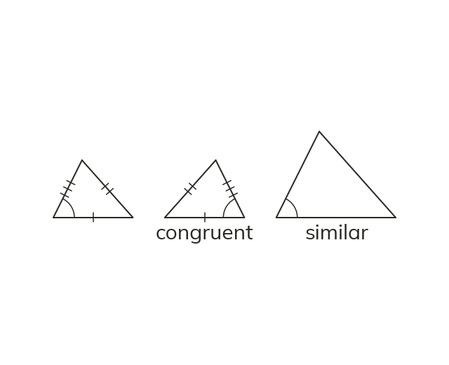

Congruent or similar
Congruent triangles are identical in size and shape. One fits exactly on the other, even turned over. Similar triangles share their angles at different sizes.
Congruent triangles are identical in size and shape, so one fits exactly on the other, even turned over. Similar triangles share their angles, but one is an enlargement of the other.